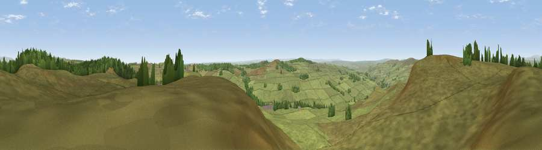

Viewpoint near West Woodburn
#9628 in England · top 21% of its area beats it · near West WoodburnThe view, rendered

A 360° render of this exact spot computed from the terrain model, tree cover and land cover — summer colours, afternoon light, calibrated against photographs of famous viewpoints. Real trees, hedges and buildings will differ in detail.
The panorama
Grey silhouette: terrain skyline in each direction (720 bearings, Earth curvature and refraction included). Dashed green: skyline with trees (+15 m) and buildings (+8 m) as obstacles. Blue strip: how far the ground is visible on each bearing.
Where the view opens
Wedge length = distance to the farthest visible ground on that bearing (vegetation-aware). Rings at 10, 25 and 50 km.
What fills the view
92% grassland · 8% woodland
Angular shares of the visible panorama (visual magnitude), not map area. Landscape diversity 0.13 (0–1 Shannon).
Key numbers
More beautiful places nearby
The staircase of upgrades: each row has a higher view potential than everything closer. Driving times are estimates from straight-line distance, calibrated against real road routing — check an actual route before setting out.
| Place | Direction | Drive | Score |
|---|---|---|---|
| Hart Side | WNW · 0 km | ~1 min | 71.0 |
| Viewpoint near West Woodburn | S · 3 km | ~8 min | 73.4 |
| Darden Rigg | NE · 11 km | ~20 min | 77.0 |
| Viewpoint near Hepple | NE · 14 km | ~26 min | 82.4 |
| Viewpoint c12273_7856 | N · 26 km | ~42 min | 83.7 |
| Viewpoint c12396_7887 | N · 32 km | ~50 min | 85.7 |
| Viewpoint near Chillingham | NNE · 41 km | ~60 min | 88.1 |
| Long Side | SW · 90 km | ~114 min | 89.5 |
55.18376, -2.11579 · source: screening · position refined by local search. Computed location — check access rights before visiting.